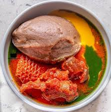

Homemade Amala, Ewedu and Gbegiri
This is my favorite Nigerian dish. It is made from yam flour and served with two types of soup.
Prep: 30 mins | Cook: 45 mins | Servings: 3

Ingredients
- 2 cups Elubo
- 1 cup beans
- Ewedu leaves
- Locust beans (Iru)
- Palm oil
- Salt and seasoning
How to Cook
- Boil beans until very soft for Gbegiri.
- Blend the beans and cook with palm oil.
- Cook Ewedu leaves with a little potash.
- Boil water and mix the flour fast.
- Serve everything hot.
Notes
Make sure there are no lumps in the Amala!
Nutrition
About 450 calories per plate.